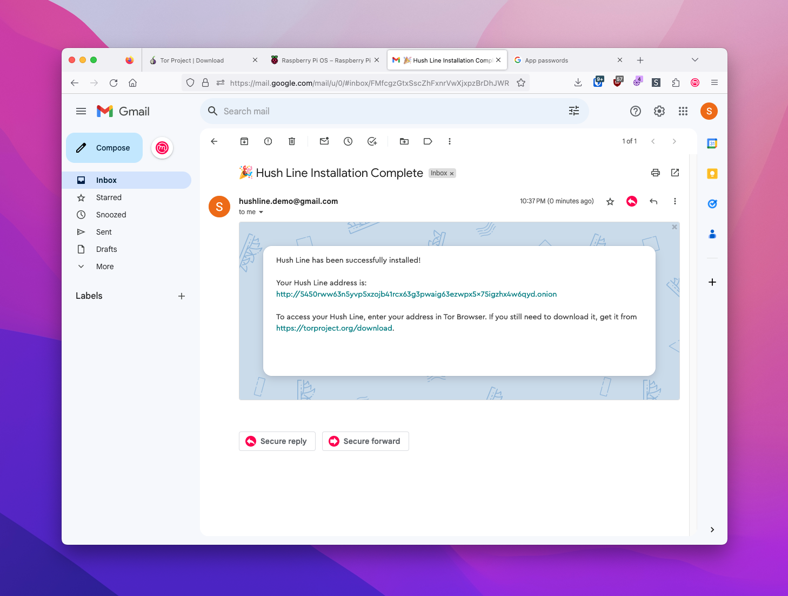

Tor-Only Install
A Tor-only install is an excellent option for someone requiring anonymity and a high level of security, a journalist or human rights activist, for example.
1. Run The Installer
After logging in to and updating either your Raspberry Pi or VPS, enter the following command to start the installation process:
curl --proto '=https' --tlsv1.2 -sSfL https://install.hushline.app | bash

Choose "Tor-Only" at the first prompt for the installation type.

2. Add Email Information
Hush Line will send an email with the encrypted Hush Line message to the account you configure here. Since we're using Gmail, we'll need the following information:
- Gmail address
- SMTP Address: smtp.gmail.com
- App Password (from prerequisites)
- Port: 465
- Public PGP Key (from prerequisites)
Once the installation completes, you'll see a message that looks like this:
✅ Installation complete!
Hush Line is a product by Science & Design.
Learn more about us at https://scidsg.org.
Have feedback? Send us an email at hushline@scidsg.org.
• Hush Line is running
http://5450rww63n5yvp5xzojb41rcx63g3pwaig63ezwp×5x75igzh×4w6qyd…onion
3. Confirmation Email
You'll receive an encrypted email confirming your Hush Line's successful installation, which includes your address and a link to download Tor Browser.
🎉 Congratulations! You've successfully set up your own anonymous tip line!